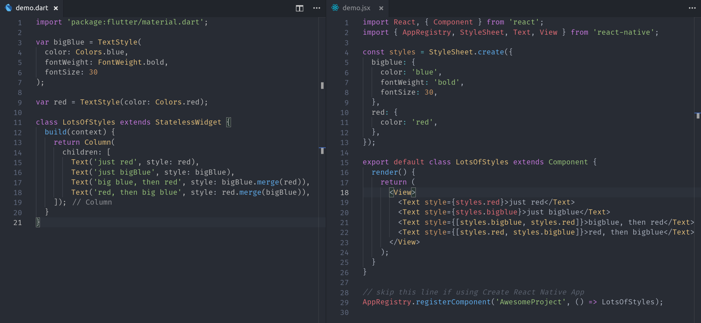
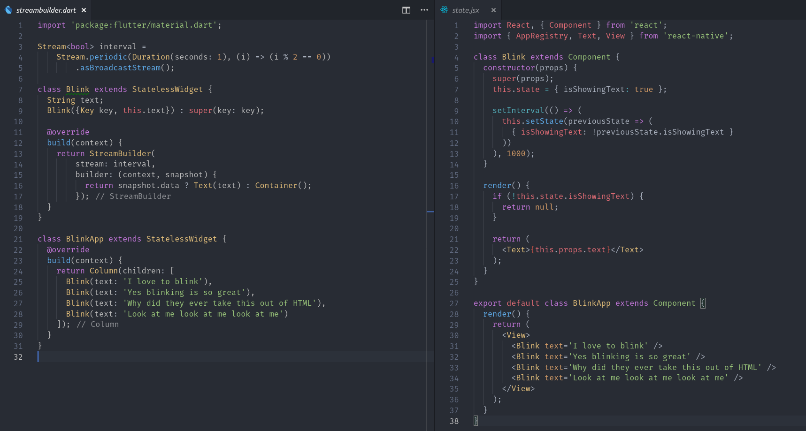

So you’re a web developer working with JavaScript and curious about Flutter? That was me about one-year ago, and at the time, learning an uncommon language like Dart seemed ridiculous because there are existing hybrid app frameworks in JS. Then I tried it… To my surprise, I was able to write productive code right out of the gate. The following lesson will compare Dart/Flutter to JS/ReactNative.
Throughout this lesson, you will see the 👉 emoji. Dart will always be on the left, and JS on the right. These are not always perfect 1-to-1 comparisons, but you get the idea.
The Tradeoffs
There are no solutions; there are only trade-offs. - Thomas Sowell
Flutter is awesome 🐦🤟 because it…
has amazing docs & tooling
performs faster because it has no JavaScript bridge
can integrate native code
hot reloads
small code footprint and no import/export/bundling headaches
it positions you for future development with Fuchsia
Flutter is meh 😒 because it…
has a steeper learning curve with Dart
cannot be debugged in the browser
has a small ecosystem of developers and plugins relative to JS
Dart vs JS - Syntax
Dart is a strongly-typed compiled language, while JS is a weakly-typed scripting language. Despite being polar opposites in these ways, they share many of the same convetions, so most JS devs will be productive on day one.
Want to write some Dart code right now? Head over to the DartPad playground.
Variables
SomeType foo; 👉 let foo
final 👉 const
const 👉 Object.freeze(obj)
index.ts
```typescript
// Reassignable variables
let person: string;
person = ‘jeff’;
person = ‘bob’;
// Single assignment variables
const lucky: number = 23;
// Implicit
const implicit = { name: ‘Jeff’ };
// Any
const whoKnows: any = getSomethingDynamic();
main.dart
```dart
// Reassignable variables
String person;
person = 'Jeff';
person = 'Bob';
// Single Assignment
final int lucky = 23;
// Single Assignment & Immutable
const Map person = 'Jeff';
// Implicit
var implicit = { 'name': 'Jeff' }; // Map<String, String>
// Any type
dynamic whoKnows = getSomethingDynamic();
Imports/Exports
In JS, you have several ways to import/export values, so let’s just look at the modern ES6 way.
globals.ts
```typescript
export default const = ‘JS’;
// or
export const lang = ‘JS’;
index.ts
```typescript
import lang from 'globals';
// or
import { lang } from 'globals';
When you import a file in Dart, you will have access to everything declared that file. It looks trivial here, but it eliminates the import hell 😠 that you find in basically every big JS project.
A Dart List is similar to a JS Array, containing most of the same instance and class methods (and beyond).
index.ts
```typescript
const things: number[] = [1, 2, 3]
main.dart
```dart
List<int> things = [1, 2, 3];
things.forEach()
things.reduce()
things.last;
Functions
Functions in Dart should feel very familiar to the JS dev - it supports named, anonymous, arrow, and higher-order functions. The main difference is that you don’t need the function keyword.
index.ts
```typescript
function addOne(val: number) {
return val + 1;
}
// Higher Order
function callme(cb: Function) {
return cb(‘Hello?’);
}
You will be using Classes frequently in Dart and they are very powerful. The language supports mixin-based inheritance, which provides excellent code reuse with composition. In JS, classes are just syntatic sugar for functions and prototypal inheritance.
index.ts
```typescript
export const main = () => {
const myComponent = new Component()
}
class Component { }
Defining and instantiating a class is nearly identical, but Dart does not require the `new` keyword.
main.dart
```dart
main() {
var myWidget = Widget();
}
class Widget { }
Class Constructors
In Dart, you can construct a class by calling its name like a Function. In addition, you can use named constructors to instantiate the same with different logic.
index.ts
```typescript
export const main = () => {
const bar = new Component(1,2);
}
class Component {
constructor(private a, public b) {
// non-ts version
// this.a = a
// this.b = b
}
}
Starting any variable or property with `_` in Dart will make it private to its library or class.
JavaScript does not have a native stream-like data structure yet, but they are commonly provided via supporting packages like RxJS, Mobx, and others. A stream is similar to a Promise (Future), except that is
A Stream is like a Future that emits multiple values over time and we can even use it with async/await 😍.
main.dart
```dart
main() async {
var items = Stream.fromIterable([1,2,3]);
await for (int i in items) {
// do something
}
// Or setup a listener
items.listen(print);
}
There is one big concept to keep in mind, single subscription streams (default) will throw an error if multiple subscribers try to listen.
- Single-subscription streams 👉 Cold observable
- Broadcast streams 👉 Hot Observable
Even though streams are available in Dart, I often find myself using [RxDart](https://pub.dartlang.org/packages/rxdart) in Flutter. The beauty of RxDart is that it builds on top of streams, rather than try to reinvent the wheel, so anything that uses a stream in Flutter can also use an Rx observable. Also, if you're coming from the Angular world you can keep the operators you know and love like `switchMap`, `takeUntil`, `scan`, and so on.
## Flutter vs Frameworks
Flutter is inspired by JavaScript frameworks like React/Angular/Vue that enable components to reactively update the UI when data changes. In fact, Flutter provides a `setState` method that works exactly like it does in [ReactJS](https://reactjs.org/docs/react-component.html#setstate).
Overall, it is not very opinionated about how architect the app. You can use composition to build a bunch of tiny widgets in their own files, or create a few big widgets in a single file.
### Dependency Management
- pubspec.yaml 👉 package.json
- [Pub](https://pub.dartlang.org/) 👉 [NPM](https://www.npmjs.com/)
Dependencies are registered in the **pubspec.yaml** and should auto-update on save.
### Widgets and Components
- Widget 👉 Component
- `build` 👉 `render`
As you may have guessed, Flutter has components similar to those in React, with a build method that can be called when state changes.
### Full React Native Comparison
Let's go ahead and recreate this [styled component](https://facebook.github.io/react-native/docs/state) from the react native docs. You'll notice the Flutter version on the left has about 65% of the code footprint, with a guarantee of type-safety. Also see the [other examples in this gist](https://gist.github.com/codediodeio/8d59623a3ccac79e9168122b21c4a766).

Flutter provides several ways to manage component state. You can use `setState` just like React does, but there are some additional built-in techniques. My personal favorite is to represent stateful data as a `Stream` or Rx `Observable`, then use the `StreamBuilder` widget to conditionally paint the UI. As you can see, this does not require any explicit calls to render the UI, rather it's based on the most recent value emitted from the stream. The code footprint is improved slightly, but this gains really add up if you find yourself setting the state frequently.
